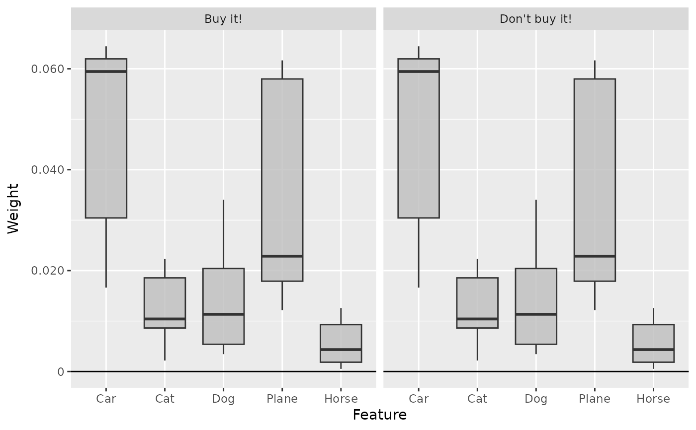
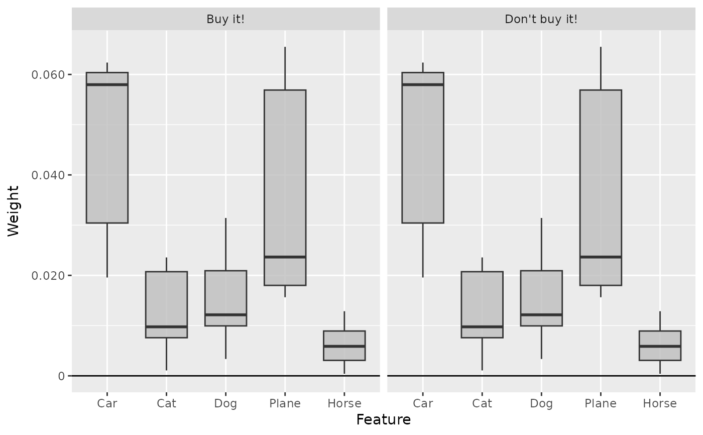

The R6 class LIME calculates the feature weights of a linear surrogate of
the prediction model for a instance to be explained, namely the
local interpretable model-agnostic explanations (LIME). It is a
model-agnostic method that can be applied to any predictive model.
This means, in particular, that
LIME can be applied not only to objects of the Converter class but
also to any other model. The only requirement is the argument pred_fun,
which generates predictions with the model for given data. However, this
function is pre-implemented for models created with
nn_sequential, keras_model,
neuralnet or Converter. Internally, the
suggested package lime is utilized and applied to data.frame.
The R6 class can also be initialized using the run_lime function
as a helper function so that no prior knowledge of R6 classes is required.
Note: Even signal and image data are initially transformed into a
data.frame using as.data.frame() and then lime::lime and
lime::explain are
applied. In other words, a custom pred_fun may need to convert the
data.frame back into an array as necessary.
See also
Other methods:
ConnectionWeights,
DeepLift,
DeepSHAP,
ExpectedGradient,
Gradient,
IntegratedGradient,
LRP,
SHAP,
SmoothGrad
Super classes
innsight::InterpretingMethod -> innsight::AgnosticWrapper -> LIME
Methods
Method new()
Create a new instance of the LIME R6 class. When initialized,
the method LIME is applied to the given data and the results are
stored in the field result.
Usage
LIME$new(
model,
data,
data_ref,
output_type = NULL,
pred_fun = NULL,
output_idx = NULL,
output_label = NULL,
channels_first = TRUE,
input_dim = NULL,
input_names = NULL,
output_names = NULL,
...
)Arguments
model(any prediction model)
A fitted model for a classification or regression task that is intended to be interpreted. AConverterobject can also be passed. In order for the package to know how to make predictions with the given model, a prediction function must also be passed with the argumentpred_fun. However, for models created bynn_sequential,keras_model,neuralnetorConverter, these have already been pre-implemented and do not need to be specified.data(
array,data.frameortorch_tensor)
The individual instances to be explained by the method. These must have the same format as the input data of the passed model and has to be eithermatrix, anarray, adata.frameor atorch_tensor. If no value is specified, all instances in the datasetdatawill be explained.
Note: For the model-agnostic methods, only models with a single input and output layer is allowed!data_ref(
array,data.frameortorch_tensor)
The dataset to which the method is to be applied. These must have the same format as the input data of the passed model and has to be eithermatrix, anarray, adata.frameor atorch_tensor.
Note: For the model-agnostic methods, only models with a single input and output layer is allowed!output_type(
character(1))
Type of the model output, i.e., either"classification"or"regression".pred_fun(
function)
Prediction function for the model. This argument is only needed ifmodelis not a model created bynn_sequential,keras_model,neuralnetorConverter. The first argument ofpred_funhas to benewdata, e.g.,output_idx(
integer,listorNULL)
These indices specify the output nodes for which the method is to be applied. In order to allow models with multiple output layers, there are the following possibilities to select the indices of the output nodes in the individual output layers:An
integervector of indices: If the model has only one output layer, the values correspond to the indices of the output nodes, e.g.,c(1,3,4)for the first, third and fourth output node. If there are multiple output layers, the indices of the output nodes from the first output layer are considered.A
listofintegervectors of indices: If the method is to be applied to output nodes from different layers, a list can be passed that specifies the desired indices of the output nodes for each output layer. Unwanted output layers have the entryNULLinstead of a vector of indices, e.g.,list(NULL, c(1,3))for the first and third output node in the second output layer.NULL(default): The method is applied to all output nodes in the first output layer but is limited to the first ten as the calculations become more computationally expensive for more output nodes.
output_label(
character,factor,listorNULL)
These values specify the output nodes for which the method is to be applied. Only values that were previously passed with the argumentoutput_namesin theconvertercan be used. In order to allow models with multiple output layers, there are the following possibilities to select the names of the output nodes in the individual output layers:A
charactervector orfactorof labels: If the model has only one output layer, the values correspond to the labels of the output nodes named in the passedConverterobject, e.g.,c("a", "c", "d")for the first, third and fourth output node if the output names arec("a", "b", "c", "d"). If there are multiple output layers, the names of the output nodes from the first output layer are considered.A
listofcharactor/factorvectors of labels: If the method is to be applied to output nodes from different layers, a list can be passed that specifies the desired labels of the output nodes for each output layer. Unwanted output layers have the entryNULLinstead of a vector of labels, e.g.,list(NULL, c("a", "c"))for the first and third output node in the second output layer.NULL(default): The method is applied to all output nodes in the first output layer but is limited to the first ten as the calculations become more computationally expensive for more output nodes.
channels_first(
logical(1))
The channel position of the given data (argumentdata). IfTRUE, the channel axis is placed at the second position between the batch size and the rest of the input axes, e.g.,c(10,3,32,32)for a batch of ten images with three channels and a height and width of 32 pixels. Otherwise (FALSE), the channel axis is at the last position, i.e.,c(10,32,32,3). If the data has no channel axis, use the default valueTRUE.input_dim(
integer)
The model input dimension excluding the batch dimension. It can be specified as vector of integers, but has to be in the format "channels first".input_names(
character,factororlist)
The input names of the model excluding the batch dimension. For a model with a single input layer and input axis (e.g., for tabular data), the input names can be specified as a character vector or factor, e.g., for a dense layer with 3 input features usec("X1", "X2", "X3"). If the model input consists of multiple axes (e.g., for signal and image data), use a list of character vectors or factors for each axis in the format "channels first", e.g., uselist(c("C1", "C2"), c("L1","L2","L3","L4","L5"))for a 1D convolutional input layer with signal length 4 and 2 channels.
Note: This argument is optional and otherwise the names are generated automatically. But if this argument is set, all found input names in the passed model will be disregarded.output_names(
character,factor)
A character vector with the names for the output dimensions excluding the batch dimension, e.g., for a model with 3 output nodes usec("Y1", "Y2", "Y3"). Instead of a character vector you can also use a factor to set an order for the plots.
Note: This argument is optional and otherwise the names are generated automatically. But if this argument is set, all found output names in the passed model will be disregarded....other arguments forwarded to
lime::explain.
Examples
#----------------------- Example 1: Torch -----------------------------------
library(torch)
# Create nn_sequential model and data
model <- nn_sequential(
nn_linear(5, 12),
nn_relu(),
nn_linear(12, 2),
nn_softmax(dim = 2)
)
data <- torch_randn(25, 5)
# Calculate LIME for the first 10 instances and set the
# feature and outcome names
lime <- LIME$new(model, data[1:10, ], data_ref = data,
input_names = c("Car", "Cat", "Dog", "Plane", "Horse"),
output_names = c("Buy it!", "Don't buy it!"))
# You can also use the helper function `run_lime` for initializing
# an R6 LIME object
lime <- run_lime(model, data[1:10, ], data_ref = data,
input_names = c("Car", "Cat", "Dog", "Plane", "Horse"),
output_names = c("Buy it!", "Don't buy it!"))
# Get the result as an array for the first two instances
get_result(lime)[1:2,, ]
#> , , Buy it!
#>
#> Car Cat Dog Plane Horse
#> [1,] -0.018419232 0.01915762 0.0256181 -0.02024414 0.12926322
#> [2,] -0.004557014 -0.02365922 -0.0969191 0.04440350 -0.00397498
#>
#> , , Don't buy it!
#>
#> Car Cat Dog Plane Horse
#> [1,] 0.018419232 -0.01915762 -0.0256181 0.02024414 -0.129263222
#> [2,] 0.004557013 0.02365922 0.0969191 -0.04440350 0.003974979
#>
# Plot the result for both classes
plot(lime, output_idx = c(1, 2))
# Show the boxplot over all 10 instances
boxplot(lime, output_idx = c(1, 2))

# We can also forward some arguments to lime::explain, e.g. n_permutatuins
# to get more accurate values
lime <- run_lime(model, data[1:10, ], data_ref = data,
input_names = c("Car", "Cat", "Dog", "Plane", "Horse"),
output_names = c("Buy it!", "Don't buy it!"),
n_perturbations = 200)
# Plot the boxplots again
boxplot(lime, output_idx = c(1, 2))

#----------------------- Example 2: Converter object --------------------------
# We can do the same with an Converter object (all feature and outcome names
# will be extracted by the LIME method!)
conv <- convert(model,
input_dim = c(5),
input_names = c("Car", "Cat", "Dog", "Plane", "Horse"),
output_names = c("Buy it!", "Don't buy it!"))
# Calculate LIME for the first 10 instances
lime <- run_lime(conv, data[1:10], data_ref = data, n_perturbations = 300)
# Plot the result for both classes
plot(lime, output_idx = c(1, 2))
 #----------------------- Example 3: Other model -------------------------------
if (require("neuralnet") & require("ranger")) {
library(neuralnet)
library(ranger)
data(iris)
# Fit a random forest unsing the ranger package
model <- ranger(Species ~ ., data = iris, probability = TRUE)
# There is no pre-implemented predict function for ranger models, i.e.,
# we have to define it ourselves.
pred_fun <- function(newdata, ...) {
predict(model, newdata, ...)$predictions
}
# Calculate LIME for the instances of index 1 and 111 and add
# the outcome labels (for LIME, the output_type is required!)
lime <- run_lime(model, iris[c(1, 111), -5],
data_ref = iris[, -5],
pred_fun = pred_fun,
output_type = "classification",
output_names = levels(iris$Species),
n_perturbations = 300)
# Plot the result for the first two classes and all selected instances
plot(lime, data_idx = 1:2, output_idx = 1:2)
# Get the result as a torch_tensor
get_result(lime, "torch_tensor")
}
#> Loading required package: ranger
#> torch_tensor
#> (1,.,.) =
#> 0.0314 -0.0109 -0.0205
#> 0.0221 -0.0071 -0.0150
#> 0.4255 -0.1990 -0.2263
#> 0.3813 -0.1826 -0.1986
#>
#> (2,.,.) =
#> -0.0240 -0.0230 0.0470
#> 0.0011 0.0154 -0.0165
#> -0.2090 0.2022 0.0067
#> -0.2279 -0.1833 0.4112
#> [ CPUFloatType{2,4,3} ]
#----------------------- Example 3: Other model -------------------------------
if (require("neuralnet") & require("ranger")) {
library(neuralnet)
library(ranger)
data(iris)
# Fit a random forest unsing the ranger package
model <- ranger(Species ~ ., data = iris, probability = TRUE)
# There is no pre-implemented predict function for ranger models, i.e.,
# we have to define it ourselves.
pred_fun <- function(newdata, ...) {
predict(model, newdata, ...)$predictions
}
# Calculate LIME for the instances of index 1 and 111 and add
# the outcome labels (for LIME, the output_type is required!)
lime <- run_lime(model, iris[c(1, 111), -5],
data_ref = iris[, -5],
pred_fun = pred_fun,
output_type = "classification",
output_names = levels(iris$Species),
n_perturbations = 300)
# Plot the result for the first two classes and all selected instances
plot(lime, data_idx = 1:2, output_idx = 1:2)
# Get the result as a torch_tensor
get_result(lime, "torch_tensor")
}
#> Loading required package: ranger
#> torch_tensor
#> (1,.,.) =
#> 0.0314 -0.0109 -0.0205
#> 0.0221 -0.0071 -0.0150
#> 0.4255 -0.1990 -0.2263
#> 0.3813 -0.1826 -0.1986
#>
#> (2,.,.) =
#> -0.0240 -0.0230 0.0470
#> 0.0011 0.0154 -0.0165
#> -0.2090 0.2022 0.0067
#> -0.2279 -0.1833 0.4112
#> [ CPUFloatType{2,4,3} ]